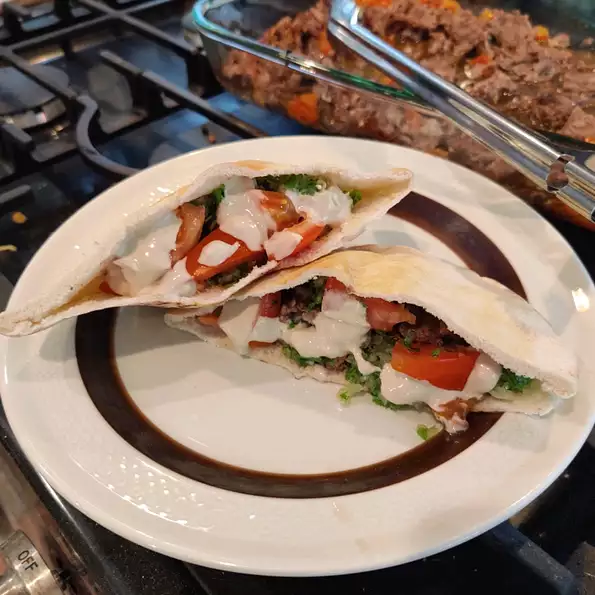

Lebanese Donair

Desciption
This is a Lebanese donair recipe, a traditional dish made with seasoned meat and tahini sauce that's enjoyed in many parts of the Middle East.
- 3¼ pounds boneless top round steak, sliced very thin
- ½ cup red wine vinegar
- ½ cup olive oil
- ¼ cup fresh lemon juice
- 1 teaspoon allspice
- ½ teaspoon ground cinnamon
- ¼ teaspoon cardamom
- ½ teaspoon ground black pepper
- salt, to taste
- 2 large tomatoes, coarsely chopped
- 1 clove garlic, minced